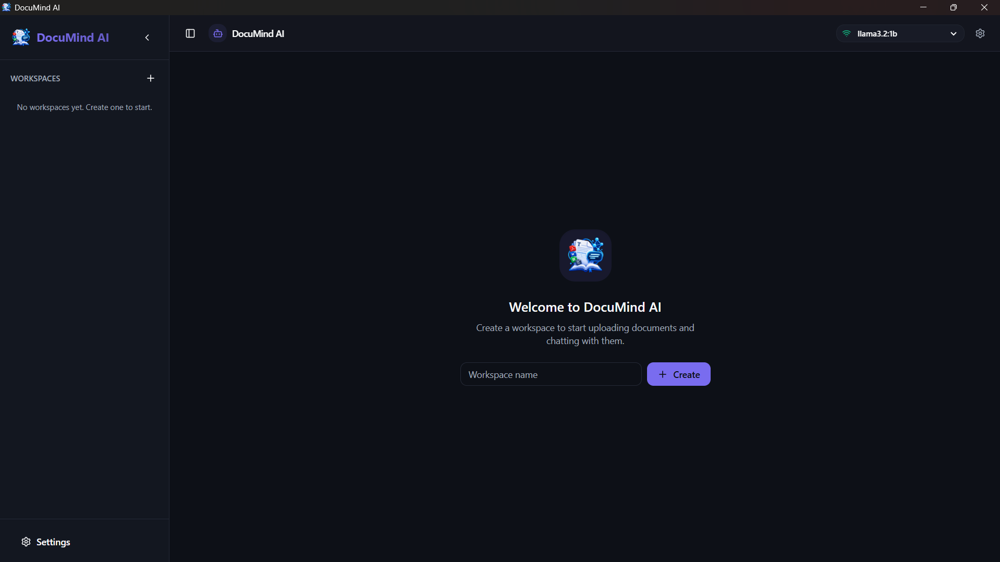
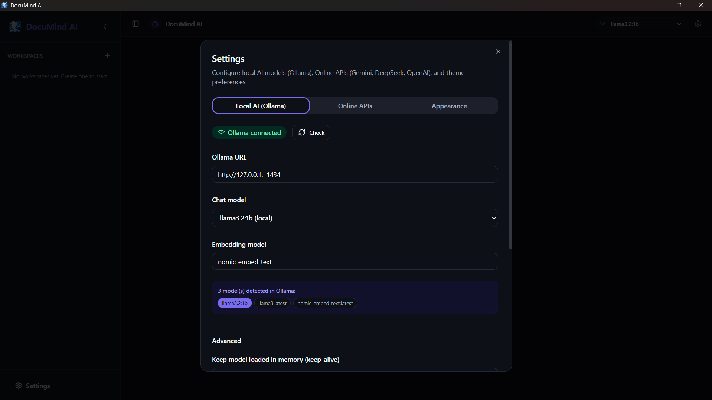
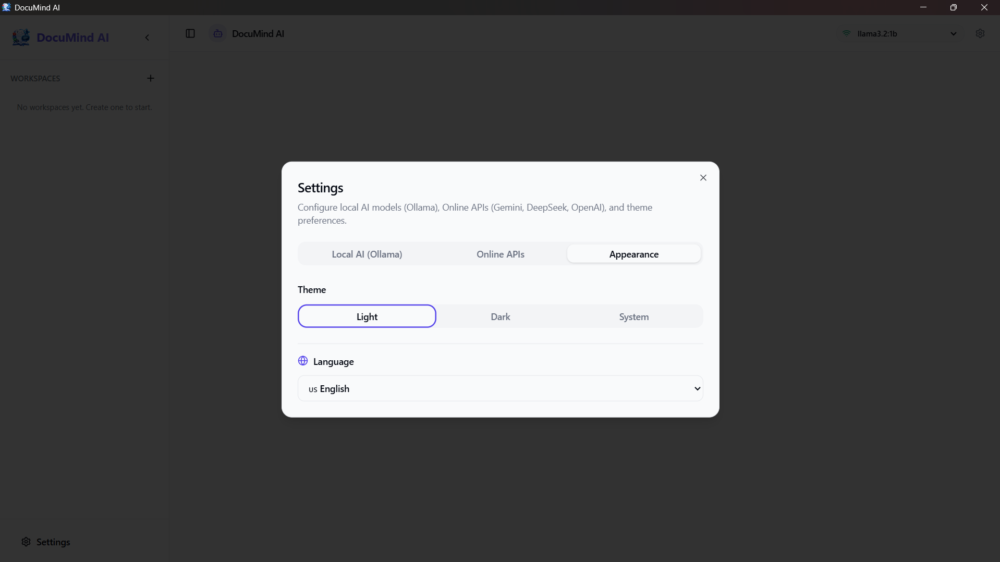
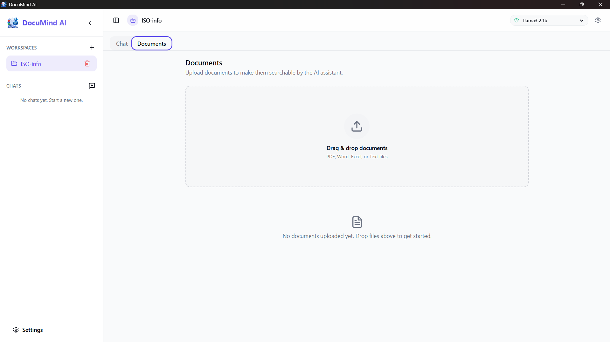
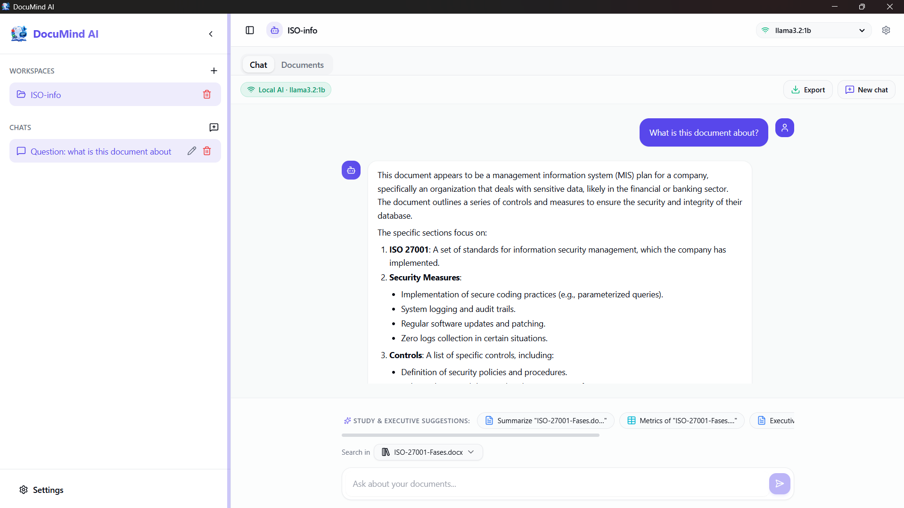

Conversa con tus documentos. Nada sale de tu equipo.
DocuMind AI es una app de escritorio que responde preguntas sobre tus PDF, Word, Excel y archivos de texto usando un modelo de lenguaje local. El parseo, la búsqueda y la generación corren en tu máquina; solo si tú lo activas, un modelo en la nube redacta la respuesta final.
Así se ve DocuMind AI
El flujo completo dentro de la app, capturado en pantalla.





Todo lo que necesitas, nada que temer
Una base de conocimiento personal que responde con fuentes, sin depender de la nube.
100% local por defecto
El parseo, los embeddings, la búsqueda y la generación corren en tu máquina desde la primera pregunta.
Motor en la nube, opcional
Activa Gemini, DeepSeek u OpenAI solo para redactar la respuesta final. La búsqueda sigue siendo local.
Fuentes verificables
Cada respuesta muestra los fragmentos exactos usados, con su puntaje de similitud, como en un artículo académico.
Workspaces aislados
Organiza documentos y chats en proyectos independientes; los datos nunca se mezclan entre ellos.
Progreso en tiempo real
Una barra de avance muestra cada paso mientras se analizan, fragmentan e indexan tus archivos.
Interfaz en 5 idiomas
Inglés, español, portugués, francés y alemán, con detección automática del idioma del sistema.
De un archivo a una respuesta con fuentes
Cinco pasos, todos dentro de tu equipo, con progreso visible en cada uno.
Analizar
Extrae el texto de PDF, DOCX, XLSX o TXT. Los PDF usan un motor de respaldo si el primero falla.
Fragmentar
Divide el texto en piezas de 1000 caracteres con 50 de solape, para no cortar ideas a la mitad.
Vectorizar
Convierte cada fragmento en un vector de 768 dimensiones con nomic-embed-text, en grupos concurrentes.
Indexar
Guarda los vectores en SQLite, en lotes de 100 filas, listos para búsqueda por similitud.
Responder
Al preguntar, se buscan los 5 fragmentos más cercanos y se generan la respuesta y sus fuentes.
Elige dónde se redacta la respuesta
La recuperación de información es siempre local. Solo el último paso, la redacción, puede delegarse a la nube.
IA local · Ollama
Corre en tu máquina con llama3.2:1b por defecto. Sin cuenta, sin costo, sin conexión.
IA en la nube · opcional
Gemini, DeepSeek u OpenAI redactan la respuesta final con la clave que tú configuras.
| IA local · Ollama | IA en la nube · opcional | |
|---|---|---|
| Dónde corre | Tu máquina (localhost) | Servidores del proveedor |
| Necesita internet | No | Sí |
| Costo | Gratis | Según el proveedor |
| Qué se envía | Nada | Solo la pregunta y los fragmentos recuperados |
Tus archivos, el texto extraído y los vectores nunca salen de tu equipo, elijas el motor que elijas.
Un mapa exacto de qué se guarda y qué se envía
La misma tabla que verías en la configuración de la app.
| Dato | Dónde se guarda | ¿Sale de tu equipo? |
|---|---|---|
| Tus archivos | Tu disco | Nunca |
| Texto extraído | SQLite · document_texts | Nunca |
| Embeddings | SQLite · chunks.vector | Nunca |
| Historial de chat | SQLite · messages | Nunca |
| Claves de API | SQLite · settings | Solo al llamar al proveedor elegido |
| Pregunta + contexto recuperado | Memoria, durante la consulta | Solo si activas la nube |
Construido con herramientas de escritorio modernas
En marcha en tres pasos
Necesitas Node.js 22+, Rust estable y Ollama instalado y en ejecución.
1. Instala los modelos
Modelo de chat: llama3.2:1b (~1.3 GB) · Modelo de embeddings: nomic-embed-text (274 MB, 768 dimensiones)
2. Instala las dependencias
3. Ejecuta la app
# chat / generación (~1.3 GB) $ ollama pull llama3.2:1b # embeddings (274 MB, 768 dim) $ ollama pull nomic-embed-text $ npm install $ npm run tauri dev